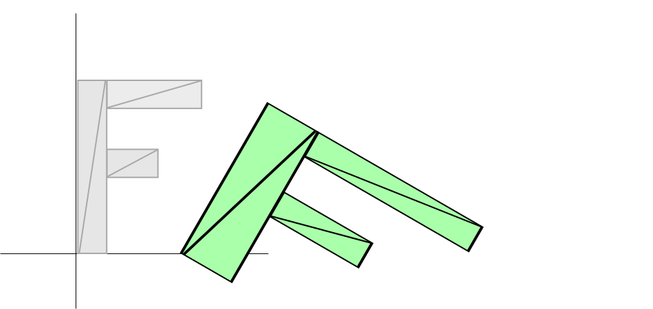

Matrices 2D en WebGL2
Cet article fait suite à une série d’articles sur WebGL. Le premier a commencé par les fondamentaux et le précédent portait sur la mise à l’échelle de géométrie 2D.
Dans les 3 derniers articles, nous avons vu comment translater la géométrie, faire pivoter la géométrie et mettre à l’échelle la géométrie. La translation, la rotation et la mise à l’échelle sont chacune considérées comme un type de ‘transformation’. Chacune de ces transformations nécessitait des modifications du shader et chacune des 3 transformations dépendait de l’ordre. Dans notre exemple précédent, nous avons mis à l’échelle, puis fait pivoter, puis translaté. Si nous appliquions celles-ci dans un ordre différent, nous obtiendrions un résultat différent.
Par exemple, voici une mise à l’échelle de 2, 1, une rotation de 30 degrés, et une translation de 100, 0.

Et voici une translation de 100,0, une rotation de 30 degrés et une mise à l’échelle de 2, 1
Les résultats sont complètement différents. Pire encore, si nous avions besoin du deuxième exemple, nous devrions écrire un shader différent qui appliquerait la translation, la rotation et la mise à l’échelle dans notre nouvel ordre souhaité.
Eh bien, des personnes bien plus intelligentes que moi ont découvert que vous pouvez faire tout cela avec les mathématiques matricielles. Pour la 2D, nous utilisons une matrice 3x3. Une matrice 3x3 est comme une grille avec 9 cases :
| 1.0 | 2.0 | 3.0 |
| 4.0 | 5.0 | 6.0 |
| 7.0 | 8.0 | 9.0 |
Pour faire les calculs, nous multiplions la position par les colonnes de la matrice et additionnons les résultats. Nos positions n’ont que 2 valeurs, x et y, mais pour faire ce calcul, nous avons besoin de 3 valeurs, donc nous utiliserons 1 pour la troisième valeur.
Dans ce cas, notre résultat serait
| newX = | x * | 1.0 | + | newY = | x * | 2.0 | + | extra = | x * | 3.0 | + |
| y * | 4.0 | + | y * | 5.0 | + | y * | 6.0 | + | |||
| 1 * | 7.0 | 1 * | 8.0 | 1 * | 9.0 |
Vous regardez probablement cela en pensant “QUEL EST L’INTÉRÊT ?” Eh bien, supposons que nous ayons une translation. Nous appellerons la quantité que nous voulons translater tx et ty. Faisons une matrice comme celle-ci
| 1.0 | 0.0 | 0.0 |
| 0.0 | 1.0 | 0.0 |
| tx | ty | 1.0 |
Et maintenant regardez ceci
| newX = | x | * | 1.0 | + | newY = | x | * | 0.0 | + | extra = | x | * | 0.0 | + |
| y | * | 0.0 | + | y | * | 1.0 | + | y | * | 0.0 | + | |||
| 1 | * | tx | 1 | * | ty | 1 | * | 1.0 |
Si vous vous souvenez de votre algèbre, nous pouvons supprimer tout endroit qui multiplie par zéro. Multiplier par 1 ne fait effectivement rien, donc simplifions pour voir ce qui se passe
| newX = | x | * | 1.0 | + | newY = | x | * | 0.0 | + | extra = | x | * | 0.0 | + |
| y | * | 0.0 | + | y | * | 1.0 | + | y | * | 0.0 | + | |||
| 1 | * | tx | 1 | * | ty | 1 | * | 1.0 |
ou de manière plus concise
newX = x + tx; newY = y + ty;
Et extra, on s’en fiche vraiment. Cela ressemble étonnamment au code de translation de notre exemple de translation.
De même, faisons une rotation. Comme nous l’avons souligné dans l’article sur la rotation, nous avons juste besoin du sinus et du cosinus de l’angle auquel nous voulons pivoter, donc
s = Math.sin(angleToRotateInRadians); c = Math.cos(angleToRotateInRadians);
Et nous construisons une matrice comme celle-ci
| c | -s | 0.0 |
| s | c | 0.0 |
| 0.0 | 0.0 | 1.0 |
En appliquant la matrice, nous obtenons ceci
| newX = | x | * | c | + | newY = | x | * | -s | + | extra = | x | * | 0.0 | + |
| y | * | s | + | y | * | c | + | y | * | 0.0 | + | |||
| 1 | * | 0.0 | 1 | * | 0.0 | 1 | * | 1.0 |
En noircissant toutes les multiplications par 0 et 1, nous obtenons
| newX = | x | * | c | + | newY = | x | * | -s | + | extra = | x | * | 0.0 | + |
| y | * | s | + | y | * | c | + | y | * | 0.0 | + | |||
| 1 | * | 0.0 | 1 | * | 0.0 | 1 | * | 1.0 |
Et en simplifiant, nous obtenons
newX = x * c + y * s; newY = x * -s + y * c;
Ce qui est exactement ce que nous avions dans notre exemple de rotation.
Et enfin la mise à l’échelle. Nous appellerons nos 2 facteurs d’échelle sx et sy
Et nous construisons une matrice comme celle-ci
| sx | 0.0 | 0.0 |
| 0.0 | sy | 0.0 |
| 0.0 | 0.0 | 1.0 |
En appliquant la matrice, nous obtenons ceci
| newX = | x | * | sx | + | newY = | x | * | 0.0 | + | extra = | x | * | 0.0 | + |
| y | * | 0.0 | + | y | * | sy | + | y | * | 0.0 | + | |||
| 1 | * | 0.0 | 1 | * | 0.0 | 1 | * | 1.0 |
ce qui est vraiment
| newX = | x | * | sx | + | newY = | x | * | 0.0 | + | extra = | x | * | 0.0 | + |
| y | * | 0.0 | + | y | * | sy | + | y | * | 0.0 | + | |||
| 1 | * | 0.0 | 1 | * | 0.0 | 1 | * | 1.0 |
ce qui simplifié donne
newX = x * sx; newY = y * sy;
Ce qui est identique à notre exemple de mise à l’échelle.
Maintenant, je suis sûr que vous pourriez toujours penser “Et alors ? Quel est l’intérêt ?” Cela semble beaucoup de travail juste pour faire la même chose que nous faisions déjà.
C’est là que la magie opère. Il s’avère que nous pouvons multiplier les matrices
ensemble et appliquer toutes les transformations en une seule fois. Supposons que nous ayons
une fonction, m3.multiply, qui prend deux matrices, les multiplie et
retourne le résultat.
var m3 = {
multiply: function(a, b) {
var a00 = a[0 * 3 + 0];
var a01 = a[0 * 3 + 1];
var a02 = a[0 * 3 + 2];
var a10 = a[1 * 3 + 0];
var a11 = a[1 * 3 + 1];
var a12 = a[1 * 3 + 2];
var a20 = a[2 * 3 + 0];
var a21 = a[2 * 3 + 1];
var a22 = a[2 * 3 + 2];
var b00 = b[0 * 3 + 0];
var b01 = b[0 * 3 + 1];
var b02 = b[0 * 3 + 2];
var b10 = b[1 * 3 + 0];
var b11 = b[1 * 3 + 1];
var b12 = b[1 * 3 + 2];
var b20 = b[2 * 3 + 0];
var b21 = b[2 * 3 + 1];
var b22 = b[2 * 3 + 2];
return [
b00 * a00 + b01 * a10 + b02 * a20,
b00 * a01 + b01 * a11 + b02 * a21,
b00 * a02 + b01 * a12 + b02 * a22,
b10 * a00 + b11 * a10 + b12 * a20,
b10 * a01 + b11 * a11 + b12 * a21,
b10 * a02 + b11 * a12 + b12 * a22,
b20 * a00 + b21 * a10 + b22 * a20,
b20 * a01 + b21 * a11 + b22 * a21,
b20 * a02 + b21 * a12 + b22 * a22,
];
}
}
Pour rendre les choses plus claires, créons des fonctions pour construire des matrices pour la translation, la rotation et la mise à l’échelle.
var m3 = {
translation: function(tx, ty) {
return [
1, 0, 0,
0, 1, 0,
tx, ty, 1,
];
},
rotation: function(angleInRadians) {
var c = Math.cos(angleInRadians);
var s = Math.sin(angleInRadians);
return [
c,-s, 0,
s, c, 0,
0, 0, 1,
];
},
scaling: function(sx, sy) {
return [
sx, 0, 0,
0, sy, 0,
0, 0, 1,
];
},
};
Maintenant, modifions notre shader. L’ancien shader ressemblait à ceci
#version 300 es
in vec2 a_position;
uniform vec2 u_resolution;
uniform vec2 u_translation;
uniform vec2 u_rotation;
uniform vec2 u_scale;
void main() {
// Met à l'échelle la position
vec2 scaledPosition = a_position * u_scale;
// Effectue la rotation de la position
vec2 rotatedPosition = vec2(
scaledPosition.x * u_rotation.y + scaledPosition.y * u_rotation.x,
scaledPosition.y * u_rotation.y - scaledPosition.x * u_rotation.x);
// Ajoute la translation.
vec2 position = rotatedPosition + u_translation;
Notre nouveau shader sera beaucoup plus simple.
#version 300 es
in vec2 a_position;
uniform vec2 u_resolution;
uniform mat3 u_matrix;
void main() {
// Multiplie la position par la matrice.
vec2 position = (u_matrix * vec3(a_position, 1)).xy;
...
Et voici comment nous l’utilisons
// Dessine la scène.
function drawScene() {
webglUtils.resizeCanvasToDisplaySize(gl.canvas);
// Indique à WebGL comment convertir de l'espace de découpage en pixels
gl.viewport(0, 0, gl.canvas.width, gl.canvas.height);
// Efface le canvas
gl.clearColor(0, 0, 0, 0);
gl.clear(gl.COLOR_BUFFER_BIT | gl.DEPTH_BUFFER_BIT);
// Indique d'utiliser notre programme (paire de shaders)
gl.useProgram(program);
// Lie l'ensemble attribut/tampon que nous voulons.
gl.bindVertexArray(vao);
// Passe la résolution du canvas pour pouvoir convertir
// des pixels vers l'espace de découpage dans le shader
gl.uniform2f(resolutionUniformLocation, gl.canvas.width, gl.canvas.height);
* // Calcule les matrices
* var translationMatrix = m3.translation(translation[0], translation[1]);
* var rotationMatrix = m3.rotation(rotationInRadians);
* var scaleMatrix = m3.scaling(scale[0], scale[1]);
*
* // Multiplie les matrices.
* var matrix = m3.multiply(translationMatrix, rotationMatrix);
* matrix = m3.multiply(matrix, scaleMatrix);
*
* // Définit la matrice.
* gl.uniformMatrix3fv(matrixLocation, false, matrix);
// Définit la couleur.
gl.uniform4fv(colorLocation, color);
// Dessine le rectangle.
var primitiveType = gl.TRIANGLES;
var offset = 0;
var count = 18;
gl.drawArrays(primitiveType, offset, count);
}
Voici un exemple utilisant notre nouveau code. Les curseurs sont les mêmes, translation, rotation et mise à l’échelle. Mais la façon dont ils sont utilisés dans le shader est beaucoup plus simple.
Pourtant, vous pourriez vous demander, et alors ? Cela ne semble pas être un grand avantage. Mais maintenant, si nous voulons changer l’ordre, nous n’avons pas besoin d’écrire un nouveau shader. Nous pouvons simplement changer les calculs.
...
// Multiplie les matrices.
var matrix = m3.multiply(scaleMatrix, rotationMatrix);
matrix = m3.multiply(matrix, translationMatrix);
...
Voici cette version.
Être capable d’appliquer des matrices comme ceci est particulièrement important pour l’animation hiérarchique comme des bras sur un corps, des lunes sur une planète autour d’un soleil, ou des branches sur un arbre. Pour un exemple simple d’animation hiérarchique, dessinons notre ‘F’ 5 fois mais à chaque fois commençons avec la matrice du ‘F’ précédent.
// Dessine la scène.
function drawScene() {
...
// Calcule les matrices
var translationMatrix = m3.translation(translation[0], translation[1]);
var rotationMatrix = m3.rotation(rotationInRadians);
var scaleMatrix = m3.scaling(scale[0], scale[1]);
// Matrice de départ.
var matrix = m3.identity();
for (var i = 0; i < 5; ++i) {
// Multiplie les matrices.
matrix = m3.multiply(matrix, translationMatrix);
matrix = m3.multiply(matrix, rotationMatrix);
matrix = m3.multiply(matrix, scaleMatrix);
// Définit la matrice.
gl.uniformMatrix3fv(matrixLocation, false, matrix);
// Dessine la géométrie.
var primitiveType = gl.TRIANGLES;
var offset = 0;
var count = 18;
gl.drawArrays(primitiveType, offset, count);
}
}
Pour ce faire, nous avons introduit la fonction m3.identity qui crée une
matrice identité. Une matrice identité est une matrice qui représente effectivement
1.0, de sorte que si vous multipliez par l’identité, rien ne change. Tout comme
de même
Voici le code pour créer une matrice identité.
var m3 = {
identity: function () {
return [
1, 0, 0,
0, 1, 0,
0, 0, 1,
];
},
...
Voici les 5 F.
Voyons un autre exemple. Dans tous les exemples jusqu’à présent, notre ‘F’ tourne autour de son coin supérieur gauche. C’est parce que les calculs que nous utilisons tournent toujours autour de l’origine et que le coin supérieur gauche de notre ‘F’ est à l’origine, (0, 0).
Mais maintenant, parce que nous pouvons faire des calculs matriciels et que nous pouvons choisir l’ordre dans lequel les transformations sont appliquées, nous pouvons effectivement déplacer l’origine avant que le reste des transformations ne soit appliqué.
// crée une matrice qui déplacera l'origine du 'F' vers son centre.
var moveOriginMatrix = m3.translation(-50, -75);
...
// Multiplie les matrices.
var matrix = m3.multiply(translationMatrix, rotationMatrix);
matrix = m3.multiply(matrix, scaleMatrix);
+ matrix = m3.multiply(matrix, moveOriginMatrix);
Voici cet exemple. Remarquez que le F tourne et se met à l’échelle autour du centre.
En utilisant cette technique, vous pouvez pivoter ou mettre à l’échelle depuis n’importe quel point. Maintenant vous savez comment Photoshop ou Flash vous permettent de déplacer le point de rotation d’une image.
Allons encore plus loin. Si vous revenez au premier article sur les fondamentaux de WebGL, vous vous souvenez peut-être que nous avons du code dans le shader pour convertir des pixels vers l’espace de découpage qui ressemble à ceci.
...
// convertit le rectangle de pixels vers 0.0 à 1.0
vec2 zeroToOne = position / u_resolution;
// convertit de 0->1 vers 0->2
vec2 zeroToTwo = zeroToOne * 2.0;
// convertit de 0->2 vers -1->+1 (espace de découpage)
vec2 clipSpace = zeroToTwo - 1.0;
gl_Position = vec4(clipSpace * vec2(1, -1), 0, 1);
Si vous regardez chacune de ces étapes à tour de rôle, la première étape, “convertir de pixels vers 0.0 à 1.0”, est en réalité une opération de mise à l’échelle. La deuxième est également une opération de mise à l’échelle. La suivante est une translation et la toute dernière met à l’échelle Y par -1. Nous pouvons en fait faire tout cela dans la matrice que nous passons au shader. Nous pourrions créer 2 matrices de mise à l’échelle, une pour mettre à l’échelle par 1.0/resolution, une autre pour mettre à l’échelle par 2.0, une 3ème pour translater de -1.0,-1.0 et une 4ème pour mettre à l’échelle Y par -1 puis les multiplier toutes ensemble mais à la place, parce que les calculs sont simples, nous allons simplement créer une fonction qui crée une matrice de ‘projection’ pour une résolution donnée directement.
var m3 = {
projection: function (width, height) {
// Note : Cette matrice inverse l'axe Y pour que 0 soit en haut.
return [
2 / width, 0, 0,
0, -2 / height, 0,
-1, 1, 1,
];
},
...
Maintenant nous pouvons simplifier le shader encore plus. Voici le nouveau vertex shader complet.
#version 300 es
in vec2 a_position;
uniform mat3 u_matrix;
void main() {
// Multiplie la position par la matrice.
gl_Position = vec4((u_matrix * vec3(a_position, 1)).xy, 0, 1);
}
Et en JavaScript, nous devons multiplier par la matrice de projection
// Dessine la scène.
function drawScene() {
...
- // Passe la résolution du canvas pour pouvoir convertir
- // des pixels vers l'espace de découpage dans le shader
- gl.uniform2f(resolutionUniformLocation, gl.canvas.width, gl.canvas.height);
...
// Calcule les matrices
+ var projectionMatrix = m3.projection(
+ gl.canvas.clientWidth, gl.canvas.clientHeight);
var translationMatrix = m3.translation(translation[0], translation[1]);
var rotationMatrix = m3.rotation(rotationInRadians);
var scaleMatrix = m3.scaling(scale[0], scale[1]);
// Multiplie les matrices.
* var matrix = m3.multiply(projectionMatrix, translationMatrix);
* matrix = m3.multiply(matrix, rotationMatrix);
matrix = m3.multiply(matrix, scaleMatrix);
...
}
Nous avons également supprimé le code qui définissait la résolution. Avec cette dernière étape, nous sommes passés d’un shader plutôt compliqué avec 6-7 étapes à un shader très simple avec seulement 1 étape, tout cela grâce à la magie des mathématiques matricielles.
Avant de continuer, simplifions un peu. Bien qu’il soit courant de générer différentes matrices et de les multiplier séparément, il est également courant de simplement les multiplier au fur et à mesure. Effectivement, nous pourrions avoir des fonctions comme ceci
var m3 = {
...
translate: function(m, tx, ty) {
return m3.multiply(m, m3.translation(tx, ty));
},
rotate: function(m, angleInRadians) {
return m3.multiply(m, m3.rotation(angleInRadians));
},
scale: function(m, sx, sy) {
return m3.multiply(m, m3.scaling(sx, sy));
},
...
};
Cela nous permettrait de changer 7 lignes de code matriciel ci-dessus en seulement 4 lignes comme ceci
// Calcule la matrice
var matrix = m3.projection(gl.canvas.clientWidth, gl.canvas.clientHeight);
matrix = m3.translate(matrix, translation[0], translation[1]);
matrix = m3.rotate(matrix, rotationInRadians);
matrix = m3.scale(matrix, scale[0], scale[1]);
Et voici cela
Une dernière chose, nous avons vu ci-dessus que l’ordre importe. Dans le premier exemple, nous avions
translation * rotation * scale
et dans le deuxième, nous avions
scale * rotation * translation
Et nous avons vu comment ils sont différents.
Il y a 2 façons de regarder les matrices. Étant donné l’expression
projectionMat * translationMat * rotationMat * scaleMat * position
La première façon, que beaucoup de gens trouvent naturelle, est de commencer à droite et de travailler vers la gauche
D’abord, nous multiplions la position par la matrice de mise à l’échelle pour obtenir une position mise à l’échelle
scaledPosition = scaleMat * position
Ensuite, nous multiplions scaledPosition par la matrice de rotation pour obtenir une rotatedScaledPosition
rotatedScaledPosition = rotationMat * scaledPosition
Ensuite, nous multiplions rotatedScaledPosition par la matrice de translation pour obtenir une translatedRotatedScaledPosition
translatedRotatedScaledPosition = translationMat * rotatedScaledPosition
Et finalement, nous multiplions cela par la matrice de projection pour obtenir les positions dans l’espace de découpage
clipspacePosition = projectionMatrix * translatedRotatedScaledPosition
La 2ème façon de regarder les matrices est de lire de gauche à droite. Dans ce cas, chaque matrice change “l’espace” représenté par le canvas. Le canvas commence par représenter l’espace de découpage (-1 à +1) dans chaque direction. Chaque matrice appliquée de gauche à droite change l’espace représenté par le canvas.
Étape 1 : aucune matrice (ou la matrice identité)
espace de découpageLa zone blanche est le canvas. Le bleu est en dehors du canvas. Nous sommes dans l’espace de découpage. Les positions passées doivent être dans l’espace de découpage
Étape 2 : matrix = m3.projection(gl.canvas.clientWidth, gl.canvas.clientHeight);
de l'espace de découpage à l'espace en pixelsNous sommes maintenant dans l’espace en pixels. X = 0 à 400, Y = 0 à 300 avec 0,0 en haut à gauche. Les positions passées en utilisant cette matrice doivent être dans l’espace en pixels. Le flash que vous voyez se produit lorsque l’espace bascule de Y positif = vers le haut à Y positif = vers le bas.
Étape 3 : matrix = m3.translate(matrix, tx, ty);
déplacer l'origine vers tx, tyL’origine a maintenant été déplacée vers tx, ty (150, 100). L’espace s’est déplacé.
Étape 4 : matrix = m3.rotate(matrix, rotationInRadians);
rotation de 33 degrésL’espace a été pivoté autour de tx, ty
Étape 5 : matrix = m3.scale(matrix, sx, sy);
L’espace précédemment pivoté avec son centre en tx, ty a été mis à l’échelle de 2 en x, 1.5 en y
Dans le shader, nous faisons ensuite gl_Position = matrix * position;. Les valeurs position sont effectivement dans cet espace final.
Utilisez la méthode que vous trouvez la plus facile à comprendre.
J’espère que ces articles ont aidé à démystifier les mathématiques matricielles. Si vous voulez rester en 2D, je vous suggère de consulter la recréation de la fonction drawImage de canvas 2d et de continuer avec la recréation de la pile de matrices de canvas 2d.
Sinon, ensuite nous passerons à la 3D. En 3D, les mathématiques matricielles suivent les mêmes principes et la même utilisation. J’ai commencé par la 2D pour, je l’espère, garder les choses simples à comprendre.
De plus, si vous voulez vraiment devenir un expert en mathématiques matricielles, regardez ces vidéos incroyables.